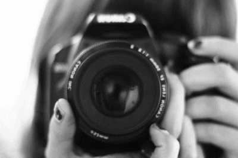

My Hobbies are :
Let's take a look at my first hobby: everyone enjoys listening to music. As a result, this includes me as well... Some people like slow music with lyrics, while others prefer loud/fast type. So it's all up to you and your preferences. However, I belong to the second group of people... So, music is one of my favourite hobbies!!!..

Let's move on to my second hobby, reading. People who know me, especially my friends, are surprised to learn that I have always enjoyed reading, but I do enjoy reading novels that make me happy and motivate me. I've been reading 'SHERLOCK HOLMES - The Study of Scarlet' lately...I'm really like it...I'd like to keep reading it and finish it. This was about my reading hobby...

Now it's time for my third hobby, sketching. I've been enjoying sketching during the lockdown lately. Drawing has always made my night since I was a child. So, it's still going ig...

Let's go on to my fourth hobby: editing. When my father got his iPhone, I began editing images and videos. Well, it was the iPhone that drew me into editing... I've worked on a lot of photos and videos, and I'm still at it...I hope I will continue it...

Now it's my fifth hobby, and it's also one of my favourites: photography..again, I became interested in photography when my father got his iPhone...I'm the kind of person that takes pictures of nearly anything... I've taken a lot of photos and I'm still working on improving my skills... thus this is about another of my favourite hobbies...
Last but not least, my sixth hobby, gadget savvy...well, let me explain what this means- this is a type of hobby that includes gathering information about gadgets, which I find fascinating, as well as finding and working on various applications for gadgets...I am not an expert in this, but I am working on it... I've recently become obsessed with two smartphones: the iPhone 12 and the Samsung Galaxy Z Flip 3...I know it's a little distracting, but it makes me happy somewhere...

So, that's it for my hobbies in general...I hope you enjoyed it... I'd also like to learn more about your interests... So, thank you for visiting my this website...